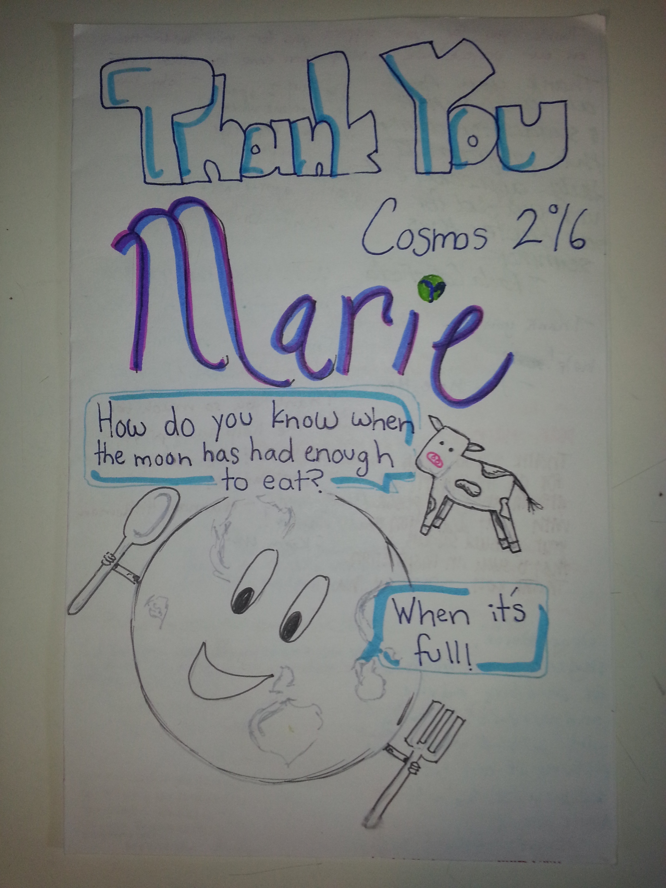
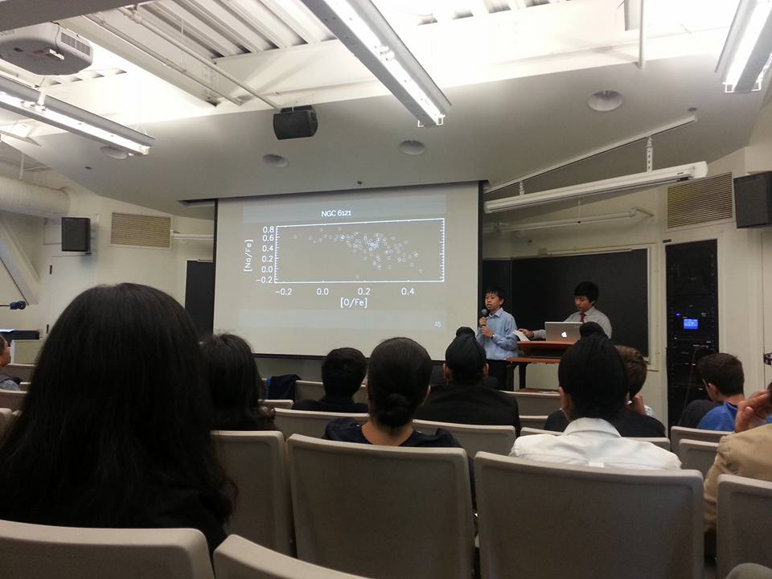

I obtained my Doctor of Philosophy from UC Santa Cruz in 2017. My thesis advisor is Prof.
J. Xavier Prochaska.
I obtained my Master of Science from UC Santa Cruz in 2015. I obtained my Bachelor of
Science in Physics from
The Chinese University of Hong Kong in 2012.
My email addresses are wingyeel at ucr dot edu and lwymarie at gmail.
My mailing address is 900 University Ave, Physics & Astronomy, University of California,
Riverside, CA 92521.
On the right you can find a business photo, a photo of myself at the Cassegrain cage of
the Palomar 200-inch telescope, and a photo of myself outside the Lick Observatory Shane
telescope dome.
This homepage is last updated on September 4, 2022.
Extremely Red Quasars (ERQ)
Dust obscured quasars are believed to be in a young stage of quasar/galaxy evolution, where
quasar feedback can be more important for driving blowouts and disrupting star formation in
their host galaxies. A remarkable population of luminous, extremely red quasars (ERQs), at
redshifts 2 to 4, have been discovered in the Baryon Oscillation Spectroscopic Survey
matched to Wide-field Infrared Survey Explorer data. ERQs are defined by extremely red colors
across rest-frame UV to mid-IR. They have a suite of extreme spectral properties that may all
be related to exceptionally powerful quasar-driven outflows.
I am a major contributor to the study of ERQs, together with Prof.
Fred Hamann (University of
California, Riverside), graduate student
Jarred Gillette (University
of California, Riverside), Dr.
Serena Perrotta (University
of California, San Diego), Prof. David
Rupke (Rhodes College), Dr.
Dominika Wylezalek
(University of Heidelberg), Prof. Nadia L.
Zakamska, and many other co-workers. We are exploring them in multi-wavelength
imaging and spectroscopic techniques, to study their multi-phase gas environment properties
and illumination patterns.
The figure below is adopted from Hamann et al. (2017). It shows median spectral energy
distributions of different quasar populations selected using different color and brightness
criteria. ERQs have a distinct spectral energy distribution. Unlike some other red quasar
populations or Type II active galactic nuclei which are steep in the rest UV, ERQs are flat
in the rest UV despite being extremely red from rest UV to mid-IR.
Probing the Inner Circumgalactic Medium and Quasar Illumination around the Reddest Extremely
Red Quasar
We present Keck/KCWI observations of the reddest known ERQ, at z = 2.3184, with
extremely fast [OIII] 5007 outflow at ~6000 km/s. The Lyα halo spans ∼100 kpc. The
halo is kinematically quiet, with velocity dispersion ∼300 km/s and no broadening above the
dark matter circular velocity down to the spatial resolution ~6 kpc from the quasar. We detect
spatially-resolved HeII 1640 and CIV 1549 emissions with kinematics similar to the
Lyα halo and a narrow component in the [OIII] 5007. Quasar reddening acts as a
coronagraph allowing views of the innermost halo. A narrow Lyα spike in the quasar
spectrum is inner halo emission, confirming the broad CIV 1549 in the unresolved quasar is
blueshifted by 2240 km/s relative to the halo frame. We propose the inner halo is dominated by
moderate-speed outflow driven in the past and the outer halo dominated by inflow. The high
central concentration of the surface brightness and the circularly symmetric morphology of the
inner halo are consistent with the ERQ being in earlier evolutionary stage than blue quasars.
The HeII 1640/Lyα ratio of the inner halo and the asymmetry level of the overall halo
are dissimilar to Type II quasars, suggesting unique physical conditions for this ERQ that are
beyond orientation differences from other quasar populations. We find no evidence of
mechanical quasar feedback in the Lyα-emitting halo.
The figures below show an optimally extracted image of the Lyα halo surrounding the
reddest ERQ, a velocity centroid map of the Lyα flux, and a velocity dispersion map of
the Lyα flux. In each figure a model of the quasar's point spread function has been
subtracted. The plus symbol marks the position of the quasar.
We are analyzing a sample of Keck/KCWI observations of ERQs and a sample of Keck/OSIRIS
observations of ERQs.
Probing Feeding and Feedback in the Circumgalactic Medium of Quasars Using Associated
Absorbers (Hubble Space Telescope Cycle 29 ID 16622; Cycle 25 ID 15034)
Observations have shown a high incidence of highly ionized absorbers within several
thousand km/s of the emission redshift of quasars, which are termed narrow associated
absorption line systems. On the other hand, Quasars Probing Quasars observations of gas
surrounding quasar-host galaxies in comparison to narrow associated absorbers on
circumgalactic scales have found anisotropic ionizing radiation, which may translate to
anisotropy in quasar feedback. While z >~ 2 narrow associated absorbers have been
extensively surveyed in optical datasets, analyses at z <~ 1.5 have been limited
to small samples with underutilized observational constraints.
We are conducting an exhaustive, archival search of HI, CIV, NV, OVI narrow absorbers at
velocity separation > -10000 km/s from the systemic redshift in z <~ 1.5 quasars.
Our goal is to examine their physical conditions and statistical properties, using a
sample of unprecedented size. We will assess their kinematics, chemical abundances,
ionization states, and distances to the quasar hosts. We will assess correlation patterns
among properties of associated absorbers and quasar luminosity. We will compare the
line-of-sight circumgalactic medium to Quasars Probing Quasars results to assess quasar
feedback. In contrast to the high-z universe, quasars at z <~ 1.5 have more
precisely measured systemic redshifts, which will enable us to search for signs of
coherent outflows and infalling gas, and separately analyze inflows for the first time.
Moreover, the lower intergalactic opacity will allow much higher sensitivity to the far
and extreme UV diagnostics.
We will release a database of UV spectra cross-matched with optical spectra of the same
quasars, with improved continuum fits and identifications of associated absorption lines.
It will be distributed as part of igmspec.
The figure on the right shows the experimental setup. The sightline to a quasar probes gas
intrinsic to the quasar, as well as gas on galactic and circumgalactic scales.
My co-Investigators are Prof.
Fred Hamann (University
of California, Riverside), Prof.
Joseph F. Hennawi (University of
California, Santa Barbara), Prof. Piero
Madau (University of California, Santa Cruz), Prof.
J. Xavier Prochaska (University of
California, Santa Cruz), Prof.
Todd Tripp
(University of Massachusetts - Amherst), Prof.
Nicolas Tejos (Pontifical
Catholic University of Valparaiso), and Dr.
Serena Perrotta
(University of California, San Diego).
The Quasars Probing Quasars Survey
I am a major contributor to the Quasars Probing Quasars (QPQ) survey, together with Prof.
J. Xavier Prochaska (University of California,
Santa Cruz), Prof. Joseph F. Hennawi
(University of California, Santa Barbara), and Prof. Robert
Simcoe (Massachusetts Institute of Technology). Instructions for downloading the
public database are available
here. QPQ is designed to examine gas related processes in the context of massive
galaxy formation, as well as quasar feedback. The QPQ survey selects closely projected pairs
from Sloan Digital Sky Survey and other surveys. The catalog comprises 4000 projected pairs
to within 5' separation.
The figure on the right shows the experimental design of QPQ. Our line of sight to the
background quasar is transverse to the foreground quasar, and intercepts its gaseous halo.
Gas clumps transverse to the foreground quasar are less illuminated by its ionizing
radiation than those along the line of sight.
The figure below shows an example background-foreground quasar pair. In the background
quasar spectrum we see strong Lyα and metal ion absorption coincident with the
foreground quasar's redshift.
We find a high incidence of HI and CIV absorption in excess to intergalactic medium average,
out to 1 Mpc transverse distance from the foreground quasars. We find the velocity widths
measured in absorption exceed previous measurements of any galaxy populations.
I also contribute to Python codes for quasar pair spectral analysis.
Quasars Probing Quasars: The Physical Properties of the Cool Circumgalactic Medium
Surrounding z ~ 2-3 Massive Galaxies Hosting Quasars
We characterize the physical properties of the cool T ≈ 104 K
circumgalactic medium surrounding z ~ 2-3 quasar host galaxies, which are predicted
to evolve into present day massive ellipticals. We use a statistical sample of 14 quasar
pairs with projected separation < 300 kpc and spectra of high dispersion and high
signal-to-noise ratio. We find extreme kinematics with low metal ion absorption line widths
typically spanning 500 km/s, exceeding any previously studied galactic population. The
circumgalactic medium is significantly enriched, even beyond the virial radius, with a
median metallicity [M/H] = -0.6. The α/Fe abundance ratio is enhanced, suggesting that halo
gas is primarily enriched by core-collapse supernovae. The projected cool gas mass within
the virial radius is estimated to be 1.9×1011 M⊙
(R⊥/160 kpc)2, accounting for 1/3 of the baryonic budget of
the galaxy halo. The ionization state of circumgalactic gas increases with projected
distance from the foreground quasars, contrary to expectation if the quasar dominates the
ionizing radiation flux. However, we also found peculiarities not exhibited in the
circumgalactic medium of other galaxy populations. In one absorption system, we may be
detecting unresolved fluorescent Lyα emission. Such anomaly suggest that
transverse sightlines are—at least in some cases—possibly illuminated. We also
discovered a peculiar case where detection of the CII* fine-structure line implies an
electron density >100 cm-3 and sub-parsec-scale gas clumps.
The figure below shows the cumulative mass profiles of total H and metals in the cool
circumgalactic medium. We constructed them using the median NH and the
median [M/H] within 200 kpc.
Quasars Probing Quasars: The Kinematics of the Circumgalactic Medium Surrounding
z ~ 2 Quasars
We examine the kinematics of the gas in the environments of galaxies hosting quasars
at z ∼ 2. We employ 148 projected quasar pairs to study the circumgalactic gas of
the foreground quasars in absorption. The sample selects foreground quasars with precise
redshift measurements, using emission-lines with precision <= 300 km/s and average offsets
from the systemic redshift <= |300 km/s|. We stack the background quasar spectra at the
foreground quasar's systemic redshift to study the mean absorption in CII, CIV, and MgII.
We find that the mean absorptions exhibit large velocity widths σv
≈ 300 km/s. Further, we find that the mean absorptions appear to be asymmetric about
the systemic redshifts. The mean absorption centroids exhibit small redshift relative to
the systemic δv = +200 km/s, with large intrinsic scatter in the centroid
velocities of the individual absorption systems. We find the observed widths are consistent
with gas in gravitational motion and Hubble flow. However, while the observation of large
widths alone does not require galactic-scale outflows, the observed offsets suggest that
the gas is on average outflowing from the galaxy. The observed offsets also suggest that
the ionizing radiation from the foreground quasars is anisotropic and/or intermittent.
The figure below shows the mean absorption centered at CII 1334, CIV 1548, and MgII 2796
of the foreground quasars. Gaussian fits are overplotted. For the doublets, a second
Gaussian with a fixed mean separation and a tied standard deviation is included in the
fits. The blue dashed lines mark the absorption centroids while the gray dashed lines
mark the systemic velocities.
Other than quasars, I am interested in the following astronomy research.
Surface Abundance Variations of Red Giants in Globular Clusters
The formation and evolution of galaxies can be probed via two techniques. First is through
lookback studies, where one observes statistically the progenitors of present-day galaxies
at high redshifts. Second is through studying present-day properties of galaxies, including
their stellar populations, to learn about their past evolution. For high-redshift gas
around galaxies, kinematics is easily measured, however chemical abundances require
ionization modeling. For redshift-zero resolved stars, although they have lost the
kinematic information at the time they formed, chemical abundances can be easily measured.
The two techniques are thus complementary. Milky Way globular clusters have metallicities
lower than high-redshift quasar systems, hence the stellar archeology approach using them
pushes even further back in cosmic time. Although globular clusters are often used as fossil
records, one must note they are not chemically homogeneous.
In this project we study red giant stars in 27 Milky Way globular clusters. We test against
the hypothesis that the surface abundance variations entirely come from pre-enriched gas,
as opposed to evolutionary effects of the observed stars themselves. We find that, other
than the prototype Messier 13 (Johnson & Pilachowski 2012), NGC 6388 also shows significant
anti-correlation between the [O/Fe] ratio and stellar luminosity. Eight globular clusters
show significant anticorrelation between [Na/Fe] ratio and stellar luminosity. Since the
stars formed at about the same age, a dependence on luminosity translates to a dependence on
stellar evolutionary stage. Bimodality possibly exists in [Na/Fe] distribution of several
globular clusters. We have further observed oxygen-poor red giant stars in Messier 13 with
Shane/Kast for the CN absorption band, to investigate CN correlation patterns with Na and O.
The figure below shows surface [O/Fe] and [Na/Fe] ratios for red giants in NGC 104. [Na/Fe]
shows a positive dependence on stellar luminosity.
I work with Prof. Graeme Smith
(University of California, Santa Cruz) for this project. Please ask me for a report written
by my interns on the archival data. Analysis of the new Shane/Kast data is ongoing.
Hydrodynamic Simulations of Quenching of Central versus Satellite Galaxies at z ~
0.1
With Prof. Peng Oh (University of
California, Santa Barbara) and Prof.
Kristian Finlator (New Mexico State University), we use hydrodynamic simulations to
test whether the properties of satellite galaxies are sensitive to models for quenching star
formation in central galaxies. We evaluate the success of a simple halo quenching model in
reproducing the observed dependence of quenched fractions of central and satellite galaxies
on stellar mass and halo mass, as well as the observed stellar content in halos of different
masses.
The figure below shows the fraction of galaxies that are satellites as a function of stellar
mass. The solid blue curve is computed from an SDSS-GALEX matched sample at z ~ 0.1
obtained from Kimm et al. (2009). The dashed blue curve is the satllite fractions computed
from our simulation outputs without halo quenching. The solid cyan curve is from the
simulation outputs with halo quenching.
Please ask me for a write-up of this work.
Observation, Data Reduction, and Data Management
I have been a service observer and data reductionist for a wide range of research topics.
Topics include dusty absorbers toward quasars, active galactic nuclei reverberation mapping
campaigns, spectroscopic redshifts of elliptical galaxies, and many others. I have observing
experience in optical and near IR wavelengths, in long-slit spectroscopy, integral-field
spectroscopy, imaging, and adaptive optics-assisted imaging and spectroscopy. I also manage
databases of large sets of UV, optical, and near IR spectra of quasars and the softwares for
accessing them. The above efforts are reflected in my co-authored
publications and github contributions.
Graduate Level and Above
I work with graduate student
Jarred Gillette in his
doctoral thesis at University of California, Riverside. We study the circumgalactic
medium and illumination pattern of dusty quasars. We obtain hyperspectral imaging of the
fluorescently illuminated gas haloes around dusty quasars using the
Keck Observatory 10-m Keck II telescope.
Please ask Jarred for his latest results.
I led the undergraduate senior thesis of Mr.
Greg Sallaberry at
University of California, Santa Cruz, who is now a master student at Leiden University. The
work is partially sponsored by the STEM diversity program
LAMAT, meaning star in Mayan. We work together
on acquiring spectroscopic redshifts for massive elliptical galaxies using the
Lick Observatory 3-m Shane telescope. We then
measure the fractions of galaxies that are satellites at the highest stellar masses. Below
is a photo of Mr. Sallaberry presenting his excellent poster.
I was a Teaching Assistant of eight different undergraduate astronomy and physics classes,
under seven different instructors. My teaching philosophy is that, non-Western contributions
in the history of science
should be introduced to students. In particular, I taught a class for introductory research
experience for first-year and transfer students. I helped organize their research project
groups and cooperative homework labs. Below is a photo of the final poster fair.
Pre-college Level
I was a Teaching Assistant of the California State Summer
School for Mathematics and Science (COSMOS) of University of California Santa Cruz, over
two summers. I led high school students on pre-scripted astronomy projects. The projects
included eclipsing binaries, galactic rotation and redshift, color-magnitude diagram,
color-color diagrams, and the mass-metallicity relation of galaxies. We also observed
beautiful astronomical objects with the Lick Observatory 1-m Nickel telescope. Below is a
card designed by my students.

I led three high school interns under the Science Internship
Program (SIP) of University of California Santa Cruz, over two summers. We carried out a
research project on the surface compositions of red giant stars in globular clusters.
I advised them through the
Siemens Competition in Math, Science & Technology. Below is a photo of my interns
presenting the project.

I am first-generation high school, college, and PhD graduate. I have given private tutorials
to other low-income children in Hong Kong. I taught Mathematics and English (as a second
language).
Prior to beginning a career in Astronomy, I participated in short research
projects in various physical science disciplines.
I worked on Climate Change Sensitivity Evaluation from AIRS and IRIS
Measurements, with Prof. Yuk L. Yung in Caltech. I compared spectral data from
two spaceborne instruments IRIS and AIRS that recorded Earth's outgoing radiation,
which operated in 1970 and 2007 respectively. I then extracted greenhouse gas signals
and showed the increase. The project resulted in an
SPIE proceedings article.
I worked on Determining Cloud Base and Thickness from Spaceborne Stereoscopic
Imaging and Lidar Profiling Techniques, with Dr. Dong Wu in NASA Jet Propulsion
Laboratory. I retrieved vertical structures of clouds from stereoscopic images taken by
the spaceborne instrument MISR. I validated the results against ground based measurement
data and showed excellent agreement. The results were published in the
Caltech Undergraduate
Research Journal.
I studied The Occurrence of High Winds and Severe Gusts during the Onset of
Northeast Monsoon in Hong Kong, in the Hong Kong Observatory. I found that there
is no correlation between a rapid rate of change in atmospheric pressure gradient and the
subsequent arrival of gusts at surface. The study is completed. Please contact me for a
project report.
I studied Mechanical Vibration of Thin Plates for my senior thesis, with Prof.
Kenneth Young in The Chinese University of Hong Kong. Our approach is mathematical with
no physical assumptions. The formulation through a power series expansion in wavenumber
can be developed to high orders. Please contact me for a project report. A related
publication can be found
here.
I respect the following land acknowledgement statement: We at UCR would like to
respectfully acknowledge and recognize our responsibility to the original and current
caretakers of this land, water, and air: the Cahuilla [ka-wee-ahh], Tongva [tong-va],
Luiseño [loo-say-ngo], and Serrano [se-ran-oh] peoples and all of their ancestors and
descendants, past, present, and future. Today this meeting place is home to many
Indigenous peoples from all over the world, including UCR faculty, students, and staff,
and we are grateful to have the opportunity to live and work on these homelands.